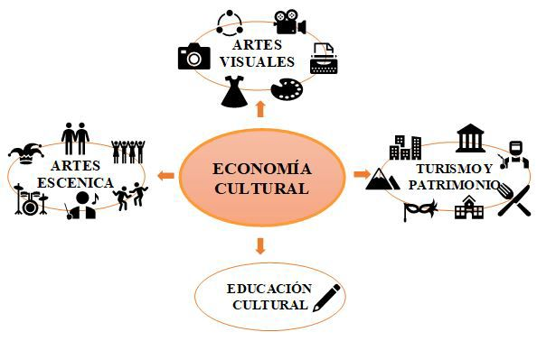

Introducción
El mundo avanza exponencialmente, todo va
más rápido y se observan nuevos conceptos
económicos, tipos de negocios que pueden
lucir poco serios o con menores ingresos.
Aún más, en un país como Colombia donde
los negocios convencionales continúan siendo
la columna vertebral económica, pensar en
ganarse la vida fuera de sectores ingenieriles,
de la salud o de la banca puede llegar a parecer
imposible. Sin embargo, el relativamente
nuevo auge de la Economía Naranja está
creciendo a pasos agigantados en todo el
mundo, generando una tarea importante para
el país, la cual es no perder la oportunidad
de ser parte de una revolución mundial que
comienza desde el hemisferio derecho del
cerebro, donde las ideas creativas se formulan
para generar cambios desde lo singular a lo
plural.
Con este documento se busca presentar
cómo surge la Economía Naranja y poner
en perspectiva como ha influenciado en el
crecimiento económico y cultural. Además,
se hace una reflexión sobre los sectores que
Colombia puede fortalecer, según estudios
internacionales, para mejorar los ingresos a
través de una Economía color Naranja, ¿pero
por qué naranja? Es un color que se relaciona
con la cultura, la creatividad, la identidad y,
además, en religiones orientales como en el
confucionismo representa la transformación
(Buitrago Restrepo & Duque Márquez, 2013). El
mundo cambia y por ello el ser humano debe
adaptarse y transformarse para sobrevivir
en él. Son los anteriores conceptos los que
fundamentan las bases de esta economía.
¿Qué es la economía naranja?
Definir lo humano siempre ha conllevado
diferentes juicios que varían entre sí. Todo
aquello que conglomera al anterior término,
puede ocasionar opiniones, las cuales, en lugar
de ser objetivas, limitan con la subjetividad.
El término de “economía naranja”, o también
llamada economía creativa, industrias creativas,
industrias culturales o universo naranja, está
relacionado con la esencia misma del ser
humano y su desarrollo a niveles individuales,
sociales, culturales, económicos y políticos. Por
lo anterior, diferentes entidades han definido
el concepto, de los cuales no se llega a una
noción unificada, pero si a una matriz común:
la economía naranja tiene como cimiento la
creatividad, el arte y la cultura de un individuo,
grupo o comunidad que genera propiedad
intelectual, la cual estimula una cadena de
valor creativa mediante la creación de bienes
y servicios.
La economía naranja está conformada por
dos ramas: la economía cultural, relativa al
patrimonio cultural y la industria creativa,
agrupación de las industrias culturales
convencionales y creaciones funcionales
(nuevos medios y software) (Buitrago Restrepo
& Duque Márquez, 2013). Dentro de las
anteriores ramas, cabe delimitar las diferentes
actividades consideradas economía naranja,
las cuales serán presentadas en las siguientes
tablas:

Figura 1. Sectores de la Economía Cultural. Recuperado de Buitrago Restrepo
& Duque Márquez, 2013
Figura 2. Sectores de la Economía Cultural. Recuperado de Buitrago Restrepo
& Duque Márquez, 2013
Este tipo de economía además de poseer
diferentes variedades de actividades posee
diferentes agentes dentro de un denominado
ecosistema naranja, a partir de los cuales el
individuo interesado en realizar negocios
puede ubicarse para entender su puesto del
cual quiere hacer parte y como este se relaciona
con los demás para comenzar una cadena de
generación de valor (MinCultura, n.d.):
Figura 3. Ecosistema de valor. Recuperado de MinCultura, n.d.
Influencia de la economía naranja en
exportaciones e importaciones a nivel
mundial y en Colombia
Impulsar una economía naranja conlleva dos
tipos de beneficios, uno más humano donde
prevalecen la cultura e identidad de un pueblo;
y el segundo, un valor agregado para el PIB
de los países que fomenten en sus planes
de desarrollo este tipo de economía. Para
entender un poco las aportaciones que genera
el universo naranja a nivel mundial, desde
2004 la Conferencia de las Naciones Unidas
sobre Comercio y Desarrollo, UNCTAD por sus
siglas en inglés, el cual es un órgano de la ONU
(organización de naciones unidas), ha buscado
a través de su programa Economía Creativa el
entendimiento global del impacto económico,
que las industrias naranjas han generado en el
mundo. UNCTAD realizó a finales de la pasada
década un estudio donde demostraban y
denotaban a las industrias creativas alrededor
del mundo como una excelente fuente de
información y retroalimentación para que
todo tipo de economías (desarrolladas, en
transición y en vías de desarrollo) aumentaran
sus índices de producción y exportación de
bienes y servicios.
De acuerdo con la UNCTAD (UNCTAD
(United Nations Conference on Trade and
Development), 2012), el comercio internacional
de bienes relacionados con las economías
creativas ha presentado un crecimiento
relativamente estable en la última década.
Figura 4. Exportación e importación de bienes a nivel mundial. Recuperado de UNCTAD (United
Nations Conference on Trade and Development), 2012
Una importante conclusión tomada de un análisis diferente realizado por la UNCTAD demuestra
que las industrias creativas poseen un impacto especial en las economías en vías de desarrollo,
debido a que las exportaciones reportaron números mayores:
Figura 5 Exportación de bienes por grupo económico. Recuperado de (UNCTAD United Nations
Conference on Trade and Development), 2012
Figura 6 Exportación de bienes por grupo económico. Recuperado de (UNCTAD United Nations
Conference on Trade and Development), 2012
En términos de exportación e importación un país como Colombia, en vía de desarrollo, se
beneficia altamente del comercio de su propiedad intelectual en los mercados mundiales. Las
exportaciones en el país crecieron significativamente en el periodo estudiado por la UNCTAD
desde US$461 Millones a $912 Millones (UNCTAD (United Nations Conference on Trade and
Development), 2012). Colombia ha planteado acuerdos con diferentes países alrededor del mundo
para dar a conocer sus productos, sin embargo, en la siguiente grafica es posible visualizar que la
mayor cantidad de bienes fueron enviados al continente americano, donde países como Estados
Unidos, Ecuador, México y Perú fueron los principales receptores.
Figura 7 Exportación de bienes por grupo económico. Recuperado de (UNCTAD United Nations
Conference on Trade and Development), 2012
Un punto interesante de la gráfica anterior es que hay cabida para que Colombia se plantee buscar
nuevos acuerdos con otras regiones del mundo y así mejorar su participación. Se identificaron
las áreas más fuertes de Colombia en temas de exportación de bienes y servicios naranjas;
además de identificar sectores explotables para aumentar ganancias y valores agregados en el
PIB.
Figura 8 Exportación de bienes creativos en Colombia por grupo de productos. Recuperado de UNCTAD
(United Nations Conference on Trade and
Development), 2012
Según lo anterior, Colombia ha sido en la pasada década un fuerte competidor en la exportación
de bienes relacionados con el sector audio visual o de creaciones funcionales, que ha sido
fortalecido por el desarrollo de nuevas tecnologías, a través del auge de las revoluciones
digitales. Seguir invirtiendo en este sector, actualmente tan solicitado, es una opción inteligente
que el país debe aprovechar para mantener una estabilidad relativa en sus industrias creativas,
sin embargo, se concluye a través de la gráfica que hay una ventana de mejora en sectores
relacionados con el patrimonio cultural de nuestro país. Según UNCTAD, el sector de artesanías
colombianas es un sector que creció un 9.7 % en 2012 con un total de US$111 millones en
ganancias, por lo que en su momento la UNCTAD lo ubico como uno de los sectores a los
cuales Colombia debía invertir más tiempo y dinero (UNCTAD (United Nations Conference on
Trade and Development), 2012).
El DANE (departamento administrativo nacional de estadística), es la entidad responsable en
Colombia de llevar un seguimiento a la cantidad de Valor agregado generado por la economía
creativa al PIB del país. Según el DANE en su tercer reporte de economía naranja 2014-2019,
los sectores pertenecientes a esta industria han aportado en el anterior rango de años un
total en promedio de 3,2% al PIB de Colombia, el comportamiento anterior se puede observar
en la siguiente gráfica, donde se detalla en dos secciones: los micronegocios que brindan un
promedio de 0,6% y las fuentes más grandes observadas con un 2,6%. (DANE (Departamento
Administrativo Nacional de Estadística), 2020)
Figura 9 Participación del valor agregado de la Economía Naranja en el total de valor agregado
nacional. Recuperado de DANE (Departamento Administrativo
Nacional de Estadistica), 2020
De igual manera, por medio de este reporte presentado por el DANE, es posible comprender que
el flujo hacia donde continúa moviéndose la economía naranja en Colombia es la de creaciones
funcionales o audiovisuales, tal como lo comento la UNCTAD en su reporte internacional de
economía naranja en 2012. Sin embargo, también es posible observar que hay un campo de
avance en el sector del patrimonio e identidad del país, pues esta sección es la segunda que mas
contribuye a ese valor agregado para el PIB de Colombia (DANE (Departamento Administrativo
Nacional de Estadística), 2020):
Figura 10 Composición del valor agregado según áreas de la Economía Naranja. Recuperado de DANE
(Departamento Administrativo Nacional de Estadística),
2020
La otra cara de la moneda: el segundo valor
de la economía naranja
Según Winston Churchill, ex primer ministro
inglés y estadista, los imperios del futuro serán
los imperios de la mente y que mejor expresión
de la mente que la creatividad, que de por si
es un recurso renovable y sostenible. Aunque,
la economía naranja presenta una serie de
dificultades derivados de su implementación
relacionados con el desempleo y la migración
económica que representa, también implica
un sinfín de posibilidades de negocios para
vincularla con diferentes olas contemporáneas
como la recién entrada cuarta revolución
industrial, o bien llamada revolución digital,
donde el uso de diferentes plataformas
tecnológicas brinda un marco confiable para
dirigir cualquier emprendimiento, en el campo
de lo naranja, al éxito
Es de conocimiento general que las grandes
oportunidades de negocios están enlazadas
con la innovación. Por consiguiente, es un
gran momento para Colombia comenzar a
crear vínculos con economías distintas a las
cuales el país está acostumbrado, y comenzar
a enfocar esfuerzos en la implementación de
planes de desarrollo sostenibles como lo han
hecho países homólogos en Europa y Asia,
donde la economía naranja ha adquirido una
mayor aceptación propiciando la generación
de políticas que permiten el desarrollo de
esta. Un ejemplo de lo fuerte que la economía
naranja se ha tornado, según datos del BID
(Banco interamericano de desarrollo), en el
número de trabajadores que posee comparada
con industrias fuertes como la automotriz en
diferentes países (Gutiérrez, 2018):
Tabla 1. Comparación del número de trabajadores mundiales en la Economía
Naranja con las industrias automotrices de Europa, Estados Unidos y Japón.
Recuperado de Gutiérrez, 2018
Aunque el enriquecimiento económico y
valor agregado que la industria creativa
ayuda a aumentar en el PIB de un país es
un escenario bastante jugoso, el verdadero
valor se encuentra detrás del telón dorado: El
fortalecimiento y creación de mecanismos para
desarrollar el potencial económico de la cultura
y generar condiciones para la sostenibilidad
de las organizaciones y agentes que la
conforman, en algunos casos comunidades
marginadas u olvidadas estatalmente. Con ella
se pretende propiciar condiciones para generar
empleo digno en el sector cultural, apoyar la
materialización de nuevas ideas creativas y
productos innovadores, fortalecer los saberes
ancestrales, las prácticas del patrimonio
cultural y la transmisión de conocimientos
tradicionales (Concejo Nacional de la Economía
Naranja, 2020).
Idea de negocio en el marco de la economía
naranja
La economía naranja se fundamenta en el uso
de la creatividad y el patrimonio cultural para
generar una ventaja comparativa y permitir
modelos de negocio exitosos, sobre todo los
que se digitalizan para transmitir bienes y
servicios culturales, los cuales son altamente
negociables y renovables. El emprendimiento
es un sector que abarca diferentes tipos de
economía. Sin embargo, los emprendedores
creativos, especialmente, se han adaptado
y transformado a las necesidades actuales.
Lo que hace posible que dentro la economía
naranja se visualicen ideas innovadoras que
hace varios años no serían viables.
Colateralmente con la creatividad, la innovación
es una herramienta necesaria para el desarrollo
de la economía creativa y la forma más certera
para que una empresa pueda aumentar su
valor, dado que cambia la forma en que se
desarrollan los productos y servicios (Gutiérrez,
2018). De acuerdo con Buitrago y Duque en
su libro Economía Naranja: una oportunidad
infinita, “Latinoamérica y el caribe tendrán que
ser más creativas: no solo porque competir por
mano de obra barata con Asia no es viable,
sino porque los niveles de industrialización y
urbanización de la región ya son relativamente
altos y ofrecen poco margen de crecimiento.”
Emprender de una forma creativa e innovadora
puede llegar a ser un reto, cuya solución
radica en encontrar respuestas a preguntas
acerca de cómo hacerlo, dónde hacerlo, qué
se necesita, quién ayudará en este proceso y
en qué sector económico se va a desarrollar,
esto último permitirá aplicar las metodologías
y herramientas con mayor eficiencia y eficacia
(Gutiérrez, 2018). Toda idea de negocio debe
identificar un problema o necesidad para
consolidar un producto o servicio.
Artesanía naranja: una oportunidad de
crecimiento y visualización
La agenda de la economía naranja señala
que se deben crear condiciones para que
exista diversificación y transformación en la
productividad, para obtener como resultado
la producción de nuevos bienes y servicios,
que impulsen la creación de nuevas empresas
e industrias en sectores diferentes a los
convencionales. Esta debe contar con objetivos
claros que impulsen el desarrollo de cada
proyecto (Freire Smith, 2017):
- Fomentar la diversificación de la
productividad.
- Estimular el desarrollo de sectores con alto
potencial de crecimiento.
- Incrementar la competitividad de las nuevas
empresas.
- Causar una nueva fuerza a las exportaciones.
Según asegura Ana María Fríes, Gerente
general de Artesanías de Colombia, la
actividad artesanal es de especial distinción
dentro de la Economía Creativa. Apostarle a
la innovación en las artesanías ha generado
mayores oportunidades de ingresos para los
artesanos y ha posicionado a Colombia como
modelo en el continente. Tal vez el sector
artesanal no puede competir ni en volumen
ni en precio con productos elaborados
industrialmente, pero además de preservar
oficios y técnicas ancestrales, mantienen
un sentido de identidad, calidad, diseño e
innovación propios de las bases conceptuales
de la economía naranja. Factores que a su vez
añaden valor al producto en mercados que
son altamente competitivos a nivel mundial
(“MinComercio y Artesanías de Colombia
respaldarán con más de $5.600 millones a 7.000
artesanos durante 2019”, 2019). Lo anterior
expresado por Fries posiciona la actividad
artesanal como un referente para establecer la
política de economía cultural y creativa que se
ha buscado explicar en este documento.
“La artesanía es la industria creativa semilla;
surge de la tierra, requiere ingenio, creatividad
e identidad cultural, lo que hace que esté
protegida por las normas de propiedad
intelectual” (El Tiempo, 2019). Lo dicho por
Puyo Posada sitúa a las artesanías como una
excelente opción, la cual impulsada en el
marco de la economía naranja ha generado
un incremento en el PIB de Colombia, rico
en propiedad intelectual semilla. Además de
promover la visualización de poblaciones
vulnerables como la indígena, afro,
palenqueros, raizales y victimas de conflicto
armado. Por medio de ferias regionales y
nacionales, como Expoartesanías, los artesanos
han contado con una plataforma para exaltar
la identidad del país. Paralelamente, nuevos aliados provenientes de la actual revolución
digital, como el e-commerce y el auge de
redes sociales, los productos han logrado
llegar a distintos mercados extranjeros
mayoristas y minoristas para atraer la atención
de compradores de diferentes países, donde
32% de compradores globales de joyería y 30%
de los compradores de decoración prefieren
hacer compras en-línea, según el informe
de minoristas de PriceWaterhouseCoopers.
Por ejemplo, en Expoartesanías 2019, 30
compradores de Estados Unidos, Francia,
España, Holanda, Japón, Brasil, Alemania y
Aruba confirmaron su participación en la Rueda
de Negocios Internacional de ProColombia
(Portafolio, 2019).
Figura 11. Producto Canastilla del proyecto Mujeres tejedoras de vida.
Recuperado de www.mujerestejedorasdevida.com
El sector artesanal en Colombia representa 15%
del sector manufacturero con un aproximado
de 350.000 trabajadores; de igual manera, los
oficios más representativos son la tejeduría con
el 58%, la madera con el 13,5% y la cerámica
con el 7,4%. Las exportaciones de artesanías
colombianas en 2018 alcanzaron un valor
cercano a US$3 millones, principalmente hacia
Suramérica y Norteamérica, siendo Estados
Unidos y Ecuador los compradores más
grandes. Asimismo, los departamentos con
mayor exportación de Colombia en 2018 fueron
Bogotá, Risaralda, Valle del Cauca y Antioquia con una participación del 78%. El negocio
de la artesanía es aun altamente explotable
pues, según un estudio de ProColombia, se
han detectado oportunidades de oferta para
las artesanías colombianas en 25 países como
Rusia, Nueva Zelanda, Australia, Suiza, Corea
del Sur, Japón, Emiratos Árabes Unidos e Italia
(Portafolio, 2019).
Colombia necesita continuar capturando
y reproduciendo el talento de segmentos
de la población, el cual históricamente ha
estado subvalorado socialmente y ha sido
pobremente remunerado en términos
económicos. Mientras se identifica a la
economía naranja como economía transversal,
la cual entrelaza conceptos contemporáneos
como el emprendimiento e innovación, las
cuales actualmente se unifican fluidamente
mediante la cuarta revolución industrial.
Además, adjunta conceptos ancestrales como
la preservación de la identidad cultural y
patrimonio de una nación, buscando creación
de patentes intelectuales que generen
crecimiento económico y social en un ámbito
internacional.
Conclusiones
- La economía naranja ofrece oportunidades
para preservar y rescatar las manifestaciones
culturales de los grupos poblacionales más
desfavorecidos y con menos oportunidades de
insertarse en la dinámica del sector económico.
- El patrimonio natural seria impactado
positivamente con los emprendimientos
creativos que promueve la economía naranja,
ya que se haría un uso sostenible de los
recursos naturales en las diversas regiones
donde estos sufren un acelerado deterioro.
- El PIB de un país en vías de desarrollo como
Colombia, se beneficiará mucho si la economía
naranja sigue siendo altamente explotada y
los sectores identificados como “explotables” le son implementados solidos planes de
desarrollo para incrementar su valor agregado.
- Este tipo de industrias abren nuevos campos
que reafirman y crean lazos económicos con
diferentes países alrededor del mundo. Donde
Colombia, siendo un país con gran cantidad
de patrimonio cultural, puede ubicarse como
un referente no solo a nivel continental sino
mundial de exportación de bienes y servicios
naranjas.
Referencias
- Buitrago Restrepo, F., & Duque Márquez, I.
(2013). La Economía Naranja Una oportunidad
infinita. Washington, D.C.: Inter-American
Development Bank.
- MinCultura. ABC ECONOMIA NARANJA.
Bogotá, Colombia: Gobierno de Colombia.
- UNCTAD (United Nations Conference on Trade
and Development). (2012). CREATIVE
ECONOMY OUTLOOK AND COUNTRY
PROFILES: Trends in international trade in
creative industries. Ginebra, Suiza: ONU.
- DANE (Departamento Administrativo Nacional de
Estadística). (2020). ECONOMÍA NARANJA
TERCER REPORTE 2020. Bogotá, Colombia:
Gobierno de Colombia.
- Gutiérrez, D. (2018). ECONOMÍA NARANJA Y
OPORTUNIDADES DE NEGOCIO. Bogotá,
Colombia: Fundación Universitaria del Área
Andina.
- Concejo Nacional de la Economía Naranja.
(2020). POLÍTICA INTEGRAL ECONOMÍA
NARANJA COLOMBIA. Bogotá, Colombia:
Gobierno de Colombia.
- Freire Smith, M. (2017). ARTESANÍA NARANJA
Un desafío para las políticas públicas locales
(1st ed.). Santiago de Chile, Chile: Marla Freire Smith.
- MinComercio y Artesanías de Colombia
respaldarán con más de $5.600 millones a 7.000
artesanos durante 2019. (2019). Recuperado el 1
November 2020, de https://www.mincit.gov.co/
- El Tiempo. (2019). ‘La artesanía es la industria
creativa semilla, surge de la tierra’. Recuperado
de http://www.eltiempo.com
- Portafolio. (2019). Artesanías colombianas,
negocio que mueve 3 millones de dólares al
año. Recuperado de http://www.portafolio.co/